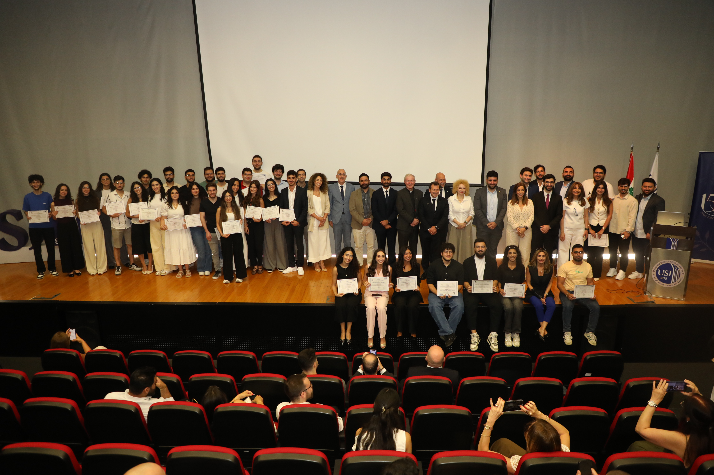
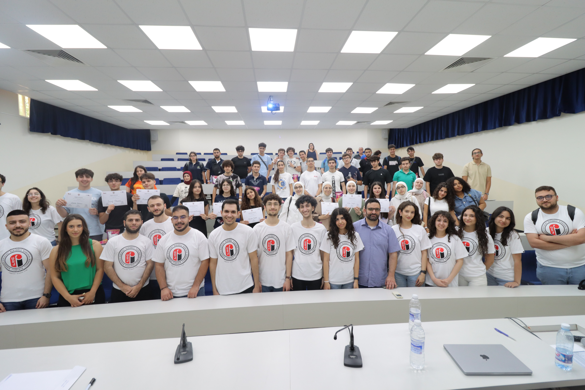
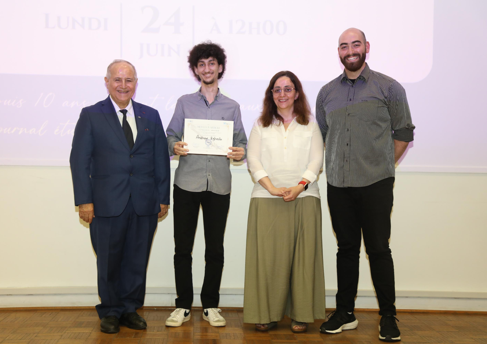

Master of Science in Computer Science,
Track: Computer Science for Data Science
Track: Computer Science for Data Science
Paris-Saclay University
Sep. 2026 - Sep. 2027
Cybersecurity Research Analyst at Saint Joseph University of Beirut
I am a Master's student in Systems and Networks with a concentration in Information Security at Saint Joseph University of Beirut, and I hold a Bachelor of Science in Computer Science from the same university.
My interests span penetration testing, exploit development, and the intersection of AI with cybersecurity.
Denial of Service (DoS) attacks are a significant threat to network security, targeting the availability of services by overwhelming them with traffic. One of the main tools used to detect and mitigate such attacks are Intrusion Detection Systems (IDS). Suricata is an open-source IDS that is designed to handle high volumes of traffic thanks to its multi-threaded architecture, and provide real-time detection of DoS attacks. However, IDS solutions like Suricata have their limitations in terms of detecting complex patterns and combinations of DoS attacks. This paper studies the performance of Suricata under multi-layer DoS attacks, while proposing remediations on top of Suricata.
Contributors: Michaela El Rif, Andrew Zgheib
Retrieval-Augmented Generation (RAG) systems combine a dense vector search over a knowledge corpus with a large language model (LLM) to produce grounded, context-aware responses. While RAG does present some advantages and efficiency in terms of performance, it also introduces a new, richer attack surface that spans the retrieval pipeline, the embedding model, the vector database, and the generative model itself. This project builds a fully functional RAG system over the personal websites of the two authors, as well as an optional local Obsidian vault, and then systematically exploits it using all ten vulnerability categories defined in the OWASP Top 10 for LLM Applications 2025.
Contributors: Michaela El Rif, Andrew Zgheib
This project implements and analyzes three honeypot environments to capture and study real-world malicious behavior. Deployments include (1) T-Pot on Microsoft Azure for multi-sensor, containerized high-interaction logging, (2) Cowrie running on VMware as an SSH/Telnet low-to-medium interaction honeypot, and (3) a custom Python-based honeypot emulating SSH, FTP, and HTTP on a separate VMware virtual machine.
Contributors: Andrew Zgheib


